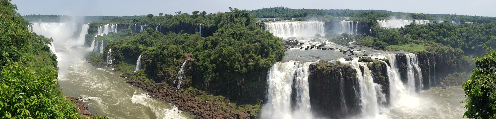
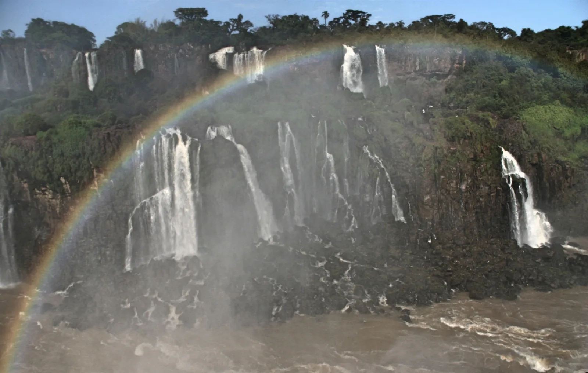
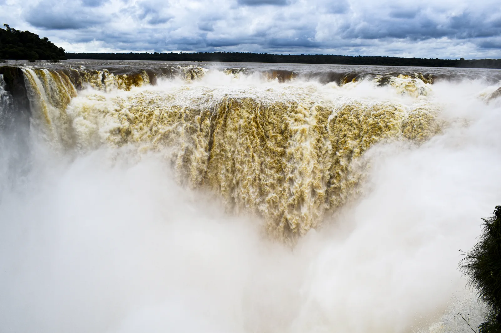
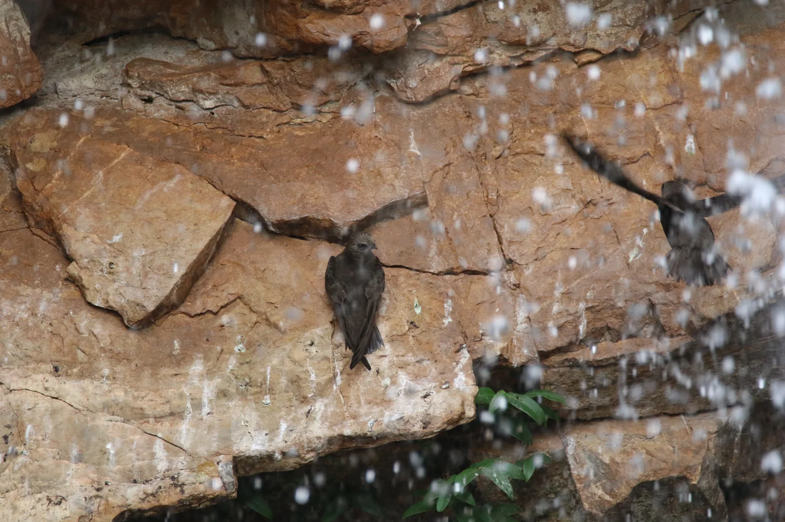
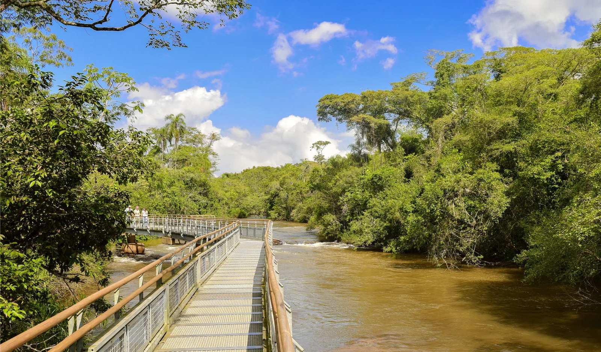

E1 · Este
E1 · Osten
E1 · East
Cataratas del Iguazú
Un río que se rompe en dos para caer, y en la caída, dicen, un arcoíris donde dos amantes todavía se encuentran.
Ein Fluss, der entzweibricht, um zu stürzen, und im Sturz, so sagt man, ein Regenbogen, in dem zwei Liebende sich noch immer begegnen.
A river that breaks in two in order to fall, and in the falling, they say, a rainbow where two lovers still meet.
Información
El río Iguazú —«agua grande» en guaraní— corre con unos 1.500 metros de ancho, salpicado de islas e islotes, hasta que el terreno se quiebra sobre una línea de basalto. Ahí el agua cae unos 80 metros en un semicírculo de casi tres kilómetros, repartida en una sucesión de saltos y cascadas. Tras la caída el río entra en un cañón profundo excavado por su propio curso, y menos de 25 kilómetros más abajo desemboca en el Paraná.
La nube de rocío que levantan los saltos empapa de forma permanente las islas y las orillas, y sostiene un microclima húmedo donde crece una selva densa: más de 2.000 especies de plantas vasculares, unas 80 de ellas árboles. Viven ahí tapires, osos hormigueros gigantes, monos caí y aulladores, ocelotes, yaguaretés y yacarés, además de más de 450 especies de aves según Parques Nacionales (UNESCO consigna alrededor de 400), entre ellas la esquiva harpía.
El ave emblema del parque es el vencejo de cascada (Cypseloides senex). Mide unos 18 centímetros, es pardo con la cabeza grisácea, y tiene el pico corto y la boca grande, ideal para atrapar insectos en vuelo. Forma bandadas enormes que salen a alimentarse muy temprano y vuelven al atardecer a dormir detrás de las cortinas de agua. El parque fue creado en 1934 por la Ley Nacional 12.103, declarado Patrimonio Mundial en 1984, y protege 67.698 hectáreas; junto a su parque hermano brasileño, Iguaçu, inscripto en 1986, suman unas 240.000 hectáreas: el remanente protegido más grande de la Selva Paranense.
Information
Der Fluss Iguazú — «großes Wasser» auf Guaraní — fließt rund 1.500 Meter breit, übersät mit Inseln und Eilanden, bis das Gelände an einer Basaltlinie abbricht. Dort stürzt das Wasser etwa 80 Meter tief in einem Halbkreis von fast drei Kilometern, verteilt auf eine Folge von Fällen und Kaskaden. Nach dem Sturz tritt der Fluss in eine tiefe Schlucht ein, die er selbst gegraben hat, und mündet keine 25 Kilometer weiter in den Paraná.
Die Gischtwolke der Fälle durchnässt die Inseln und Ufer dauerhaft und erhält ein feuchtes Kleinklima, in dem dichter Regenwald wächst: über 2.000 Arten von Gefäßpflanzen, davon etwa 80 Baumarten. Hier leben Tapire, Große Ameisenbären, Kapuziner- und Brüllaffen, Ozelots, Jaguare und Kaimane, dazu über 450 Vogelarten laut der argentinischen Nationalparkverwaltung (die UNESCO nennt rund 400), darunter die scheue Harpyie.
Das Wappentier des Parks ist der Rußsegler (Cypseloides senex). Er misst etwa 18 Zentimeter, ist braun mit gräulichem Kopf und hat einen kurzen Schnabel und einen großen Rachen, ideal zum Fangen von Insekten im Flug. Er bildet riesige Schwärme, die sehr früh zur Nahrungssuche aufbrechen und in der Dämmerung zurückkehren, um hinter den Wasservorhängen zu schlafen. Der Park wurde 1934 durch das Nationalgesetz 12.103 gegründet, 1984 zum Welterbe erklärt und schützt 67.698 Hektar; zusammen mit dem brasilianischen Schwesterpark Iguaçu, 1986 eingeschrieben, sind es rund 240.000 Hektar — der größte geschützte Rest des Paranaense-Regenwaldes.
Information
The Iguazú river — «great water» in Guaraní — runs about 1,500 metres wide, dotted with islands and islets, until the ground breaks along a basaltic line. There the water drops some 80 metres in a semicircle almost three kilometres across, split into a succession of falls and cascades. Past the drop the river enters a deep canyon carved by its own course, and less than 25 kilometres downstream it flows into the Paraná.
The cloud of spray thrown up by the falls permanently soaks the islands and banks, sustaining a humid microclimate where dense rainforest grows: over 2,000 species of vascular plants, some 80 of them trees. Tapirs, giant anteaters, capuchin and howler monkeys, ocelots, jaguars and caimans live here, along with more than 450 bird species according to Argentina's National Parks administration (UNESCO gives around 400), among them the elusive harpy eagle.
The park's emblem bird is the great dusky swift (Cypseloides senex). It measures some 18 centimetres, is brown with a greyish head, and has a short bill and a wide mouth, ideal for catching insects in flight. It forms enormous flocks that leave to feed very early and return at dusk to sleep behind the curtains of water. The park was created in 1934 by National Law 12,103, declared a World Heritage Site in 1984, and protects 67,698 hectares; together with its Brazilian sister park, Iguaçu, inscribed in 1986, they total around 240,000 hectares: the largest protected remnant of the Paranaense rainforest.
La UICN evalúa el estado de conservación del Parque Nacional Iguazú como de «preocupación significativa». La amenaza mayor está fuera del parque y fuera del alcance de quienes lo administran: el efecto combinado de las represas hidroeléctricas aguas arriba, en Brasil, que alteran el caudal del río Iguazú.
Ese cambio en el caudal tiene impactos escénicos y ecológicos que exigen monitoreo permanente. Desde 2019 Argentina lleva adelante un proyecto de doce años para estudiar los ecosistemas, las comunidades de peces y la calidad del agua.
La UICN evalúa el estado de conservación del Parque Nacional Iguazú como de «preocupación significativa». La amenaza mayor está fuera del parque y fuera del alcance de quienes lo administran: el efecto combinado de las represas hidroeléctricas aguas arriba, en Brasil, que alteran el caudal del río Iguazú.
Ese cambio en el caudal tiene impactos escénicos y ecológicos que exigen monitoreo permanente. Desde 2019 Argentina lleva adelante un proyecto de doce años para estudiar los ecosistemas, las comunidades de peces y la calidad del agua.
La UICN evalúa el estado de conservación del Parque Nacional Iguazú como de «preocupación significativa». La amenaza mayor está fuera del parque y fuera del alcance de quienes lo administran: el efecto combinado de las represas hidroeléctricas aguas arriba, en Brasil, que alteran el caudal del río Iguazú.
Ese cambio en el caudal tiene impactos escénicos y ecológicos que exigen monitoreo permanente. Desde 2019 Argentina lleva adelante un proyecto de doce años para estudiar los ecosistemas, las comunidades de peces y la calidad del agua.
Fuentes
Quellen
Sources
- UICN, Perspectiva del Patrimonio Mundial (evaluación 2025), Iguazú National Park — https://worldheritageoutlook.iucn.org/explore-sites/iguazu-national-park
Galería
Galerie
Gallery





Fuentes
Quellen
Sources
- UNESCO, Centro del Patrimonio Mundial, Iguazu National Park — https://whc.unesco.org/en/list/303/ consultado 2026-10-05abgerufen 2026-10-05accessed 2026-10-05
- Administración de Parques Nacionales, Argentina, Parque Nacional Iguazú — https://www.argentina.gob.ar/parquesnacionales/nea/parque-nacional-iguazu consultado 2026-10-05abgerufen 2026-10-05accessed 2026-10-05
- Administración de Parques Nacionales, Argentina, Ficha: Parque Nacional Iguazú (PDF) — https://www.argentina.gob.ar/sites/default/files/2019/03/ficha_-_pn_iguazu.pdf consultado 2026-10-05abgerufen 2026-10-05accessed 2026-10-05